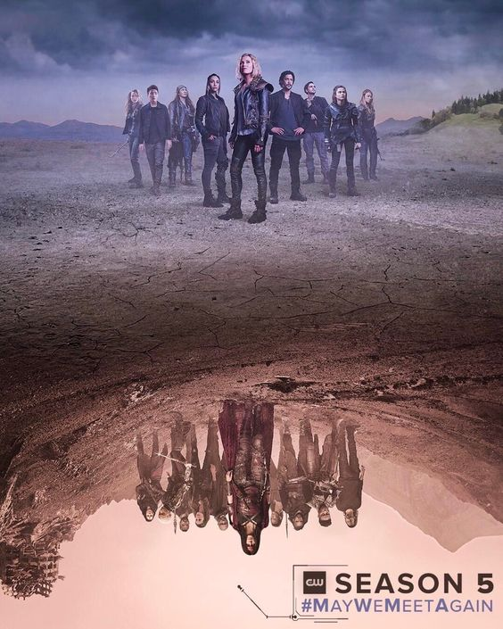

About Murphy
John Murphy is a key character in The 100, a post-apocalyptic TV series. Initially introduced as a rebellious, self-serving troublemaker, Murphy often clashes with others due to his volatile temper and survival-driven decisions. He begins as a member of the 100 juvenile delinquents sent to Earth from a space station to test if the planet is habitable. Over time, Murphy undergoes significant character development. His cynical nature and instinct for self-preservation remain central, but he also shows loyalty to his friends and a willingness to make personal sacrifices. Despite his flaws, Murphy becomes a complex, resourceful, and ultimately heroic figure in the series.
Murphy and his friends.
Murphy's charateristics.
- He is survival driven.
- He has a pessimistic view of things.
- Very resourceful
Friends
John Murphy's friends in The 100 include Bellamy Blake, Clarke Griffin, Emori, and Raven Reyes. Bellamy is a natural leader who becomes one of Murphy’s closest allies, with their bond rooted in survival and mutual loyalty. Clarke, the group’s moral compass, initially clashes with Murphy, but they grow to respect and rely on each other over time. Emori, Murphy's romantic partner, shares a similar troubled past and they support each other emotionally and in their fight for survival. Raven, a brilliant mechanic, has a complicated relationship with Murphy, but despite their tensions, they develop mutual respect for each other’s skills and work together to help the group. Click on the links below to learn more about them: